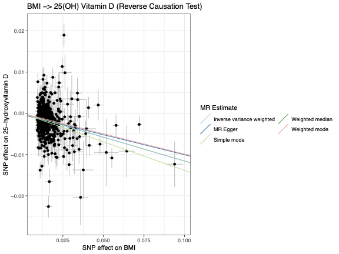
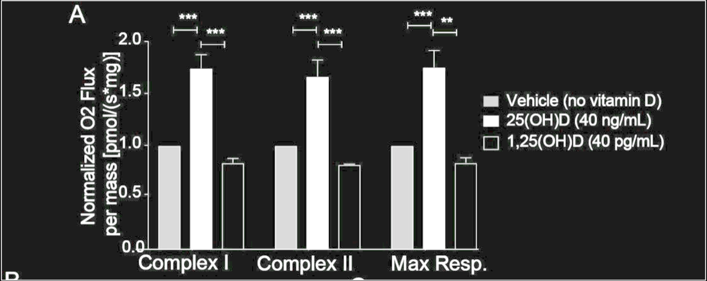
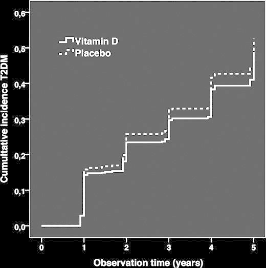
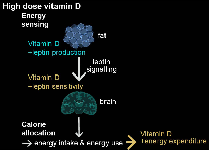
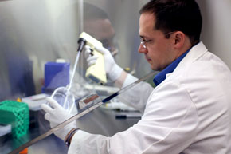
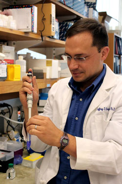
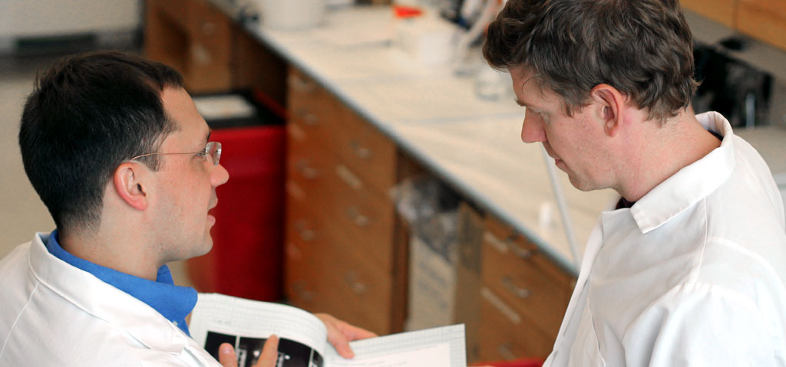
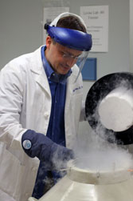
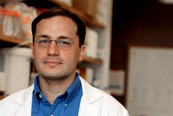
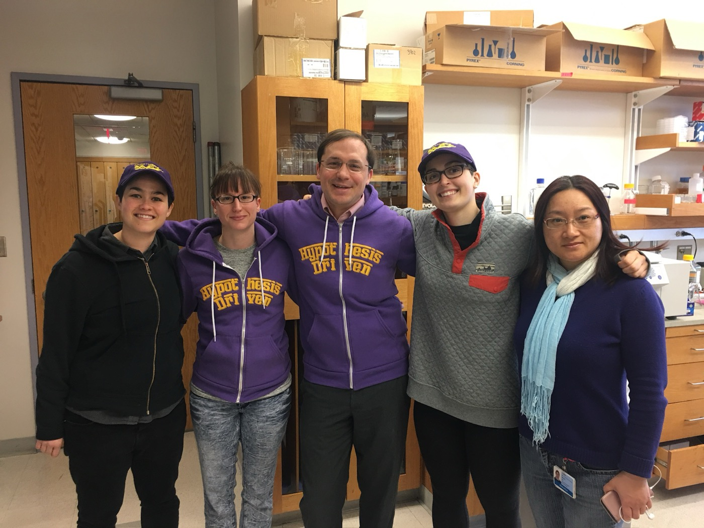

Redefining Vitamin D
Vitamin D is one of the most
recommended therapies in medicine —
and one of the least understood.
We are changing that.
University of Pennsylvania · Children's Hospital of Philadelphia
Explore Our QuestionsResearch
Big Questions
Each project in our lab is driven by a fundamental unanswered question about vitamin D with clear clinical relevance.
Low Vitamin D: Cause or Effect?
Low vitamin D is associated with many diseases. Medicine assumed low vitamin D was causative. We used disease models and observational genetic studies to ask whether the opposite was true: does disease cause low vitamin D? In asthma, obesity, and aging, the answer was yes. Disease lowers vitamin D — not the other way around.
See papers →
How Does Disease Lower Vitamin D?
Sick patients almost always have low vitamin D. Why? We measured hepatic 25-hydroxylase activity across disease states. Obesity and aging directly suppress the liver enzyme that activates vitamin D. If biology varies by disease, does it also vary by person?
See papers →Same Dose, Different Results
Two patients take the same dose. One responds. One doesn't. Why? We studied coding SNPs in CYP2R1 — the gene for vitamin D's activating enzyme. Genetic variation shapes who benefits from supplementation and who doesn't. The person matters as much as the pill.
See papers →Is the Dose the Drug?
Most trials give pharmacologic doses to people who aren't deficient. That's not the same biology as correcting a deficiency. High-dose vitamin D activates pathways that replacement doses don't touch. The dose isn't just a number — it changes what the molecule does.
See papers →
How Does High-Dose D Prevent T2 Diabetes?
Large trials show high-dose vitamin D reduces diabetes risk in prediabetic patients. The effect is real. The mechanism is unknown. We're working to identify which metabolic pathways mediate the protective effect — and whether vitamin D redirects energy metabolism more broadly.
See papers →
What Determines Calorie Allocation?
Your body decides whether surplus calories become fat, muscle, or growth. What controls that decision? We built CYP2R1 knockout mice — animals that can't activate vitamin D. Without it, calories go to fat. With it, they go to muscle and linear growth. Vitamin D is a metabolic traffic cop.
See papers →
The Missing Biomarker
PTH tells us when vitamin D is adequate for bones. Nothing tells us when it's adequate for metabolism. Every clinical trial in the field is limited by this gap. We're searching for a blood marker that tracks vitamin D's non-calcium effects. Finding one would change how we dose, monitor, and study vitamin D.
See papers →



People
Our Team

Jeffrey D. Roizen, MD, PhD
Assistant Professor of Pediatrics
Principal Investigator
University of Pennsylvania
Children's Hospital of Philadelphia
NIH-funded · Division of Endocrinology & Diabetes · 27 publications
Michael Nguyen
Research Associate
Join Our Team
We currently do not have hard funding for additional personnel, but are always looking to identify curious, enthusiastic, hard-working people who want to do careful, ambitious science — the kind that moves the boundaries of knowledge, even if only by a few millimeters.
Network
Collaborators
People who make our work better.
Hakon Hakonarson, MD, PhD
Director, Center for Applied Genomics · CHOP
Recent focusgenetic, risk, variants, neurodevelopmental · 10 recent pubs
- CYP3A4 mutation causes vitamin D-dependent rickets type 3 · J Clin Invest 2018
- Mendelian randomization: low vitamin D unlikely causative for pediatric asthma · J Allergy Clin Immunol 2016
- Genetic architecture of type 1 diabetes with low genetic risk score · Commun Biol 2021
- Improved genetic risk scoring algorithm for T1D prediction · Pediatr Diabetes 2022
- + 5 more shared publications
Shana E. McCormack, MD, MTR
Scientific Director, Neuroendocrine Center · CHOP
Recent focuschildhood, bone, density, fractures · 10 recent pubs
- Pilot RCT of intranasal oxytocin for hypothalamic obesity · J Endocr Soc 2023
- Resting energy expenditure decreased in pseudohypoparathyroidism type 1A · JCEM 2016
Community
Peers & Colleagues
Scientists we talk to.
Shana E. McCormack, MD, MTR
Pediatric Endocrinology
Recent focuschildhood, bone, density, fractures · 10 recent pubs
CHOP / UPenn
Benedict J. Kolber, PhD
Pain & Stress Neuroscience
Recent focuspain, amygdala, calcitonin, gene-related · 10 recent pubs
UT Dallas
Nico U.F. Dosenbach, MD, PhD
Precision Neuroscience
Recent focusfunctional, brain, network, organization · 10 recent pubs
Washington University in St. Louis
Ethan M. Goldberg, MD, PhD
Pediatric Neurology & Epilepsy Genetics
Recent focusmouse, older, channel, dravet · 10 recent pubs
CHOP / UPenn
Neil D. Romberg, MD
Immunology & Immune Tolerance
Recent focusgenetic, cells, immunodeficiency, tonsillar · 10 recent pubs
CHOP / UPenn
Lineage
Mentors
People who trained us.
Louis J. Muglia, MD, PhD
President & CEO, Burroughs Wellcome Fund
Recent focusprenatal, gestational, duration, preterm · 10 recent pubs
Previously Cincinnati Children's / University of Cincinnati
Michael A. Levine, MD
Chief Emeritus, Endocrinology & Diabetes
Recent focustherapy, hypoparathyroidism, pain, base · 10 recent pubs
Children's Hospital of Philadelphia
Hakon Hakonarson, MD, PhD
Director, Center for Applied Genomics
Recent focusgenetic, risk, variants, neurodevelopmental · 10 recent pubs
Children's Hospital of Philadelphia
Postdoctoral mentor
Publications
Selected Papers
Highlights from 27 publications, organized by research arc. Full list on PubMed
2019
Obesity Decreases Hepatic 25-Hydroxylase Activity Causing Low Serum 25-Hydroxyvitamin D Q1 Q2
2020
Differential Frequency of CYP2R1 Variants Across Populations Reveals Pathway Selection for Vitamin D Homeostasis Q3
2018
CYP3A4 mutation causes vitamin D-dependent rickets type 3 Q3
2018
Transethnic Evaluation Identifies Low-Frequency Loci Associated With 25-Hydroxyvitamin D Concentrations Q3
2024
High dose dietary vitamin D allocates surplus calories to muscle and growth instead of fat via modulation of myostatin and leptin signaling Q4 Q6
2024
Dietary vitamin D is a novel modulator of tumor engraftment through regulation of GC protein abundance Q4
2020
Vitamin D Therapy and the Era of Precision Medicine Q4
News
Lab News
2024
New preprint: High-dose vitamin D reallocates surplus calories from fat to muscle
Our latest work shows that dietary vitamin D modulates myostatin and leptin signaling to redirect caloric surplus toward lean mass and linear growth.
2024
New preprint: Vitamin D modulates tumor engraftment through GC protein
We show that dietary vitamin D regulates GC protein (vitamin D binding protein) abundance, with implications for tumor biology.
2023
Alex Casella defends PhD and matches into Neurology at Johns Hopkins
Congratulations to Alex on completing her MD/PhD and beginning residency training at Hopkins.
2020
"Vitamin D Therapy and the Era of Precision Medicine" published in JCEM
Our perspective on how genetic variation in vitamin D metabolism should reshape clinical practice.
Alumni
Alumni
Former members of the Roizen Lab who have gone on to do great things.

Alex Casella, MD, PhD
Neurology Resident, Johns Hopkins University (2024–2027)
Roizen Lab → UMD MSTP (MD/PhD) → Internal Medicine Internship, Johns Hopkins Bayview → Neurology Residency, Johns Hopkins
Caela Long, PhD
Neuroscience PhD, University of Pennsylvania
Roizen Lab → UPenn Neuroscience PhD → Postdoc, Wofford Lab, UPenn
Sara Pajouhanfar, MD
Genetics, Northwell Health / Cohen Children's Medical Center
Roizen Lab → Pediatrics/Medical Genetics Residency, Washington University in St. Louis → Northwell Health
Zahra Tara, MD
Pediatrics/Genetics, SSM Health Cardinal Glennon / Saint Louis University
Roizen Lab → Pediatrics Residency, Cardinal Glennon / SLU
Ilana Caplan
NYU Grossman School of Medicine
Roizen Lab → NYU School of Medicine
Azra Din, MPH
Program Manager, Clinical Research, Penn Medicine
Roizen Lab → Temple University (BS Neuroscience, MPH Health Administration & Policy) → Clinical Research Coordinator, UPenn → Program Manager, Penn Medicine
Lauren O'Lear
Shymir Bullock
Nursing, Muhlenberg
Allison Phillips
AMERX Health Care
Support
Fuel This Research
Your donation buys reagents, mice, and people-hours. That's it.
All donations are tax-deductible and processed through the Children's Hospital of Philadelphia Foundation.
Donate Through CHOPContact
Get in Touch
Location
University of Pennsylvania
Perelman School of Medicine
Philadelphia, PA
Join the Lab
Curious about our work? Use the form or send a CV and a brief note about what you want to learn.